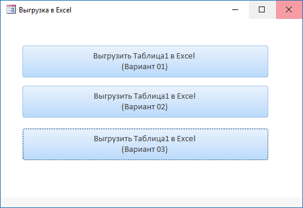
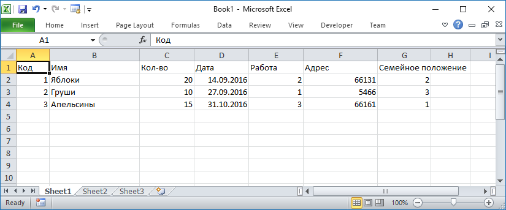

По материалам: http://www.cyberforum.ru/ms-access/thread2159175.html#post11954510
Код из примера:
'--------------------------------------------------------------------------
' Authors : Sima42, Eugene-LS (aka es), mobile
' Date : 17.12.2017
' Purpose : Простенький экспорт таблицы в MS Excel
'--------------------------------------------------------------------------
' По материалам:
' http://www.cyberforum.ru/ms-access/thread2159175.html#post11954510
'--------------------------------------------------------------------------
Option Compare Database
Option Explicit
Private intBookNo As Integer 'номер файла - объявляем на уровне модуля
'--------------------------------------------------------------------------
'Вариант 01:
'--------------------------------------------------------------------------
Private Sub CommandExport01_Click()
'Sima42, es
Dim rst As DAO.Recordset
Dim r%, c%, s$, i%
Dim oExcel As Object
Dim oBook As Object
Dim oSheet As Object
'Start a new workbook in Excel
Set oExcel = CreateObject("Excel.Application")
Set oBook = oExcel.Workbooks.Add
'Заголовки
Set oSheet = oBook.Worksheets(1)
oSheet.Range("A1").Value = "Код"
oSheet.Range("B1").Value = "Имя"
oSheet.Range("C1").Value = "Кол-во"
oSheet.Range("D1").Value = "Дата"
oSheet.Range("E1").Value = "Работа"
oSheet.Range("F1").Value = "Адрес"
oSheet.Range("G1").Value = "Семейное положение"
Set rst = CurrentDb.OpenRecordset("Таблица1", dbOpenSnapshot) 'Только просмотр
r = 1
With rst
Do Until .EOF = True 'Цикл до конца таблицы
'...операции с записью
'Тут так: cells(lRowNo, lColumnNo)
r = r + 1
For c = 1 To 7
Select Case c
Case 5, 7 'Обрезка полей "Работа" и "Семейное положение"
If IsNull(rst.Fields(c - 1).Value) = False Then
oExcel.cells(r, c) = Mid(rst.Fields(c - 1).Value, 1, 1)
End If
Case Else
oExcel.cells(r, c) = rst.Fields(c - 1).Value
End Select
Next c
.MoveNext
Loop
End With
'Выставляем ширину столбцов
For c = 1 To 7
Select Case c
Case 1
oExcel.Columns(c).ColumnWidth = 7
Case 2 '"Имя"
oExcel.Columns(c).ColumnWidth = 40
Case 3, 4, 5
oExcel.Columns(c).ColumnWidth = 12
Case Else
'oExcel.Columns(c).AutoFit
oExcel.Columns(c).ColumnWidth = 24
End Select
Next c
'Задаём путь сохранения в папке приложения
s = GetSavePath 'Смотри функцию ниже
oExcel.Visible = True
'Сохраняем в папке приложения
'oBook.SaveAs s
'или ...
'oExcel.Quit
'MsgBox "Готово", vbInformation
On Error Resume Next
rst.Close
Set rst = Nothing
Set oSheet = Nothing
Set oBook = Nothing
Set oExcel = Nothing
End Sub
'--------------------------------------------------------------------------
'Вариант 02:
'--------------------------------------------------------------------------
Private Sub CommandExport02_Click()
'http://www.cyberforum.ru/ms-access/thread2159175.html#post11954510
'mobile :
'Можно немного попроще, используя CopyFromRecordset и, заменяя с помощью Val, текстовые значения на числа
Dim strsql, temp1, i, rst As DAO.Recordset
Dim oExcel As Object, oBook As Object, oSheet As Object
Dim s$
'Start a new workbook in Excel
Set oExcel = CreateObject("Excel.Application")
Set oBook = oExcel.Workbooks.Add
strsql = "select Код, Имя, [Кол-во], [Дата], " _
& "val(Таблица1.Работа) as Работа, Адрес, " _
& "val(Таблица1.[Семейное положение]) as [Семейное положение] " _
& "from Таблица1"
Set rst = CurrentDb.OpenRecordset(strsql)
For i = 0 To rst.Fields.Count - 1
oExcel.cells(1, i + 1) = rst.Fields(i).Name
Next
oExcel.cells(2, 1).copyfromrecordset rst
'Выставляем ширину столбцов
For i = 1 To 7
Select Case i
Case 1
oExcel.Columns(i).ColumnWidth = 7
Case 2 '"Имя"
oExcel.Columns(i).ColumnWidth = 40
Case 3, 4, 5
oExcel.Columns(i).ColumnWidth = 12
Case Else
'oExcel.Columns(c).AutoFit
oExcel.Columns(i).ColumnWidth = 24
End Select
Next i
'Задаём путь сохранения в папке приложения
s = GetSavePath 'Смотри функцию ниже
oExcel.Visible = True
'Сохраняем ...
'oBook.SaveAs s
'или ...
'oExcel.Quit
'MsgBox "Готово", vbInformation
End Sub
'--------------------------------------------------------------------------
'Вариант 03:
'--------------------------------------------------------------------------
Private Sub CommandExport03_Click()
'mobile :Вариант с автоматическим построением sql запроса с помощью функции makeSql
Dim strsql, temp1, i, rst As DAO.Recordset
Dim oExcel As Object, oBook As Object, oSheet As Object
Dim s$
'Start a new workbook in Excel
Set oExcel = CreateObject("Excel.Application")
Set oBook = oExcel.Workbooks.Add
strsql = makeSql("Таблица1")
Set rst = CurrentDb.OpenRecordset(strsql)
For i = 0 To rst.Fields.Count - 1
oExcel.cells(1, i + 1) = rst.Fields(i).Name
Next
oExcel.cells(2, 1).copyfromrecordset rst
'Save the Workbook and Quit Excel
'Задаём путь сохранения в папке приложения
s = GetSavePath 'Смотри функцию ниже
oBook.SaveAs s
oExcel.Quit
MsgBox "Готово!" & vbCrLf & "Файл сохранён как:" & vbCrLf & s, vbInformation
End Sub
'--------------------------------------------------------------------------
Private Function makeSql(nameTbl) ' Для CommandExport03_Click
'nameTbl - имя таблицы
Dim tdf As TableDef, db As DAO.Database, fld As Field
Dim s, i, k
Set db = CurrentDb
Set tdf = db.TableDefs(nameTbl)
For Each fld In tdf.Fields
k = fld.Name
On Error Resume Next
i = fld.Properties("rowsource")
If Err = 0 Then
s = s & ",Val([" & nameTbl & "].[" & k & "]) as [" & k & "]"
Else
s = s & ",[" & k & "]"
End If
Err.Clear
Next
s = "select " & Mid(s, 2) & " from " & nameTbl
makeSql = s
End Function
'--------------------------------------------------------------------------
Private Function GetSavePath() As String
Dim i%
'Задаём путь приложения
intBookNo = intBookNo + 1
i = CInt(Mid(Application.Version, 1, 2)) 'Версия MS Access
If i > 11 Then 'Версия MS Access 2007 и выше (не 2003)
GetSavePath = CurrentProject.Path & "\Book" & Format(intBookNo, "000") & ".xlsx"
Else
GetSavePath = CurrentProject.Path & "\Book" & Format(intBookNo, "000") & ".xls"
End If
End Function

Результат:


MSA-2003 + MSA-2007 ( 70 kB) Пример